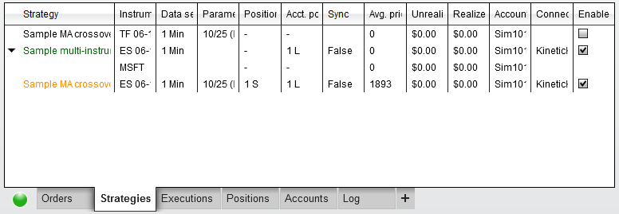
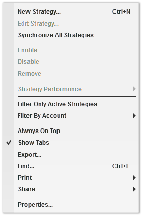
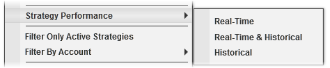
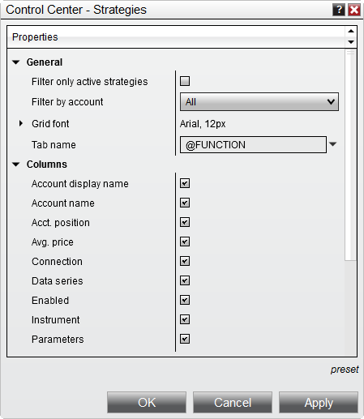

|
<< Click to Display Table of Contents >> Strategies Tab |


|
Strategies Tab
|
<< Click to Display Table of Contents >> Strategies Tab |
|
The Strategies tab displays running and terminated strategies in a data grid.
Note: The IncludeTradeHistoryInBacktest property is set to false by default when a strategy is applied directly in the Strategies tab. This provides for leaner memory usage, but at the expense of not being able to access Trade objects for historical trades. Thus, fields such as SystemPerformance.AllTrades.Count that rely on references Trade objects will not have any such references to work with. If you would like to save these objects for reference in your code, you can set IncludeTradeHistoryInBacktest to true in the Configure state. For more information, see the Working with Historical Trade Data page. |
 Understanding the strategies tab
Understanding the strategies tab
Strategy DisplayActive and stopped strategies are listed as a grid and can be started/stopped by left mouse clicking the check box in the Enabled column.

•Green highlighted "Strategy" name indicates a currently running strategy. •Orange highlighted "Strategy" name indicates the strategy is waiting until it reaches a flat position to be in sync with the account position before fully starting. (Please see the Syncing Account Positions section for configuration options) •Black highlighted "Strategy" name indicates a disabled strategy.
Strategies using multiple instruments will be expandable so that each instrument's strategy position can be viewed. In the image above, the second strategy is using ES 06-14 as well as MSFT which is shown below it.
Columns can be re-ordered and re-sized at will, and individual columns can be enabled or disabled via the Properties window accessible in the Strategies grid's Right-Click menu. The following columns are displayed in the Strategies grid by default:
The following additional columns can be applied through the grid's Properties window:
Right Click MenuRight mouse clicking within the strategies grid opens the following menu:

|
 How to view strategy performance
How to view strategy performance
Strategy PerformanceWhile the Account Performance tab will generate performance report against your account's trade history, the Strategy Performance menu allows you to generate a performance report against the trades generated by the selected strategy.

•Real-time - Generates performance data for your real-time trades only (since the strategy started running) and will exclude historical trades. If your strategy held a virtual position (calculated against historical data) upon starting, a virtual execution representing the average price of this position will be injected into the real-time results to ensure that a trade pair can be created with the executions resulting from the closing of this position. •Historical & Real-time - Generates performance data for both historical and real-time trade data. •Historical - Generates performance data for historical data only. |

Strategy Tab Properties
How to Save Property PresetsOnce you have your properties set to your preference, you can left mouse click on the "preset" text located in the bottom right of the properties dialog. Selecting the option "save" will save these settings as the default settings used every time you open a new window/tab.
If you change your settings and later wish to go back to the original factory settings, you can left mouse click on the preset text and select the option to restore to return to the original factory settings - please note though that you cannot save a custom default to restore to.
|